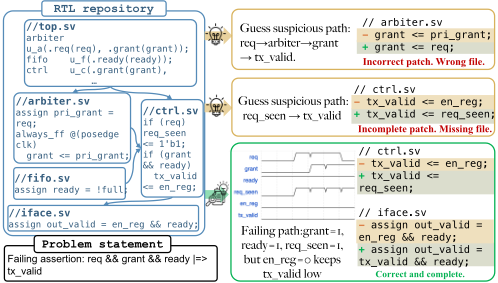
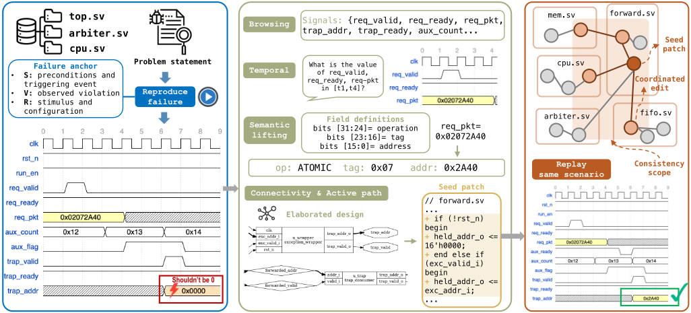
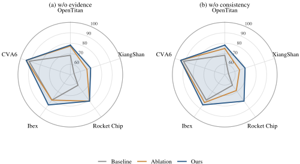
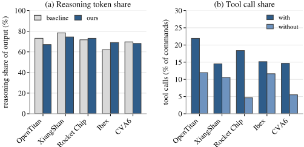
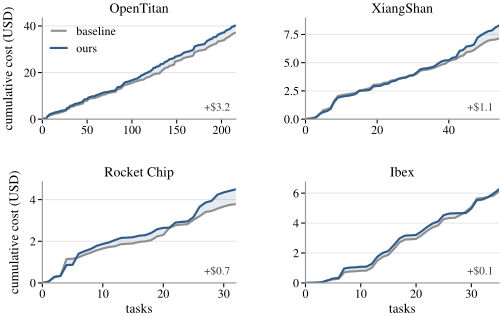

证据引导的仓库级 RTL 修复
仓库级 RTL 缺陷修复要求 Agent 在无规格说明、无参考设计的情况下，跨文件、模块与时钟周期定位根因，并把局部修复一致地传播到所有受影响位置；论文指出纯源码推理只能看到设计所有可能的路径，而非本次失败执行实际走过的路径，导致假设检验循环不收敛。方法是一个证据引导框架，围绕一次复现的失败运行组织三个模块：Failure grounding 将问题陈述解析为前置条件、触发事件与被违反行为，复现失败运行并形成失败锚点；Waveform-guided localization 提供五类结构化查询的 localization toolbox，以证据收窄循环输出候选机制与证据链；Consistency-aware repair 基于源码解析与 HDL elaboration 构建仓库关系图，对种子补丁做闭包传播并用重放验证。在 HWE-Bench 的 388 个任务上，三个被测模型的 resolved rate 均超过各自 baseline，消融显示 consistency 模块贡献最大，且框架的边际 token 成本很小。
仓库级 RTL 修复：只给定整个仓库和问题陈述，需产出让仓库自身 fail-to-pass 测试通过的补丁。难点有二：一是仓库包含多文件多模块，推理链长且跨时钟周期，又无规格或参考设计可确认候选根因，基于源码推理的现有方法无法确定本次失败执行的实际路径，定位不收敛；二是仓库级缺陷常跨多个模块和文件，只有所有受影响位置被一致修改才算修复，而现有方法无法判断局部修复是否被一致传播。
证据引导框架，以一次复现失败运行的 waveform 为共享证据工件，分三个模块：(1) Failure grounding：把问题陈述解析为前置条件 P、触发事件 E、被违反行为 Q，在未修改仓库上开启追踪构造失败运行，通过对齐检查（waveform 证实 P、E 发生且 Q 被违反）后形成失败锚点 F=(S,V,R)；(2) Waveform-guided localization：提供五类结构化查询的 localization toolbox（时间界定、活跃驱动回溯、语义提升——解码打包字段、状态编码映射、时间线对齐等），以证据收窄循环逐步消除竞争解释，输出候选机制 M 与证据链 T；(3) Consistency-aware repair and validation：构建覆盖声明、实现、结构绑定、生成 RTL 等层级的仓库关系图（结合源码解析与 HDL elaboration 证据），从种子补丁编辑点做闭包得到传播范围，agent 检查后生成协调补丁，并重放同一复现场景验证 P、E 保持且 Q 不再被违反。
在 HWE-Bench 上（共 417 个任务，29 个 OpenTitan 任务因无法适配可运行的 VCS 环境被跳过，所有条件统一在 388 个任务上评测），框架对所测每个模型（DeepSeek V4 Flash (0731) under OpenHands SDK、DeepSeek V4 Pro under Claude Code、Kimi K2.6 under Kimi CLI）的 resolved rate 均高于其各自 baseline scaffold；各条件具体百分比数值在正文文本中未给出（见表格）
消融实验：分别去掉 evidence arm（对齐检查+localization toolbox）或 consistency arm（scope 构建+replay 验证）都会损失修复任务，两者不冗余；其中 consistency arm 贡献最大，其恢复的修复需要在耦合模块处协同编辑
成本分析：框架增加的边际花费很小——OpenTitan 和 XiangShan 上是薄层，Rocket Chip 上更少，Ibex 上与 baseline 几乎无法区分；waveform 只写一次、经脚本查询，数万信号规模的 waveform 一次查询只花费一条短命令的 token，且 toolbox 减少了 baseline 花在猜测上的开销
工具使用行为：挂载 toolbox 后 agent 的工具调用占比更高；baseline 中 agent 自写脚本无法保证正确，语义错误的脚本会误导修复，框架下 toolbox 脚本经过验证，返回可据以行动的证据
剩余失败分析：一类是证据不帮助（Ibex104 需发明只在 held-out 测试与 golden patch 中出现的接口；RocketChip1493 的 golden patch 需要引入控制总线并迁移外设的 generator 级决策），一类是 agent 未用好证据（XiangShan1242 误读 store-set 指针、OpenTitan-22878 因缺少协议知识保持原字段顺序）
已有 RTL 修复与调试方法（CirFix、RTL-Repair、R3A、Clover、MechMem-RTL、VerilogCoder、VeriTrace、FVDebug、BluesFL 等）局限于模块级，或依赖给定的 failing testbench、golden testbench、形式化反例与规格；软件仓库级 agent（SWE-agent、Agentless、LocAgent、GraphLocator 等）不处理硬件的项目原生验证流。论文指出 HWE-Bench 评测了通用 agent 但此前没有已发表方法针对该设置。本文的核心区别：把诊断与修复验证都锚定在一次复现失败运行的 waveform 证据上而非纯源码推理；用基于 elaborated design（而非源码文本实例点）的仓库关系图决定补丁传播范围，并论证按源码文本估计范围会既多算（配置中从未构建的实例点，如 ibex csr 在禁用的 PMP gate 后）又漏算（一个点展开为多个实例，如 CVA6 的 spill register flushable）。
相关度级别：high
命中能力域：3.3 Agent 架构与工具使用 | 3.5 评测与可靠使用 | 3.1 上下文工程与记忆
理由：论文虽面向 RTL 硬件仓库这一特定领域，但其核心贡献正落在团队能力域上：为 Agent 设计经过验证的结构化工具箱（localization toolbox）替代自由读文件与自写不可靠脚本，属于 3.3 的 harness 与工具/技能设计，且直接回应单 Agent 执行可靠性；用'复现运行+查询接口'把大规模工件挡在上下文之外、按需返回少量值（数万信号的 waveform 只花一条短命令的 token），是 3.1 结构化上下文组织的典型实践；在 HWE-Bench 上以统一任务池做 baseline/框架/消融对比，并分析 token 成本、工具调用占比与失败归因，属于 3.5 的评测与可靠使用实证研究。其'证据锚定+重放验证'的闭环模式可迁移到团队的代码修复、测试辅助等 Agent 场景。
建议动作：深入精读并做内部分享
arXiv:2610.03219v1 [cs.AR] 2026年10月2日
Yuxin Du 1、Juxin Niu 1、Zhe Jiang 2,3、Nan Guan 1
1 香港城市大学，中国香港
2 东南大学，中国
3 国家EDA技术创新中心，中国
电子邮件：yuxindu8-c@my.cityu.edu.hk, juxin.niu@my.cityu.edu.hk, 101013615@seu.edu.cn, nanguan@cityu.edu.hk
摘要 - 仓库级寄存器传输级（RTL）修复必须定位跨越文件、模块和时钟周期的失效，然后一致地传播该修复。现有方法对源代码进行推理，这种方式只能揭示可能的行为，而无法揭示实际失败的执行，并且无法判断局部修复是否被一致地传播。因此，我们提出了一个包含三个模块的证据引导框架。失效锚定（Failure Grounding）将问题描述转换为一次可复现的失败运行和一个失效锚点。波形引导定位（Waveform-Guided Localization）利用定位工具箱将观察到的违例缩小为候选机制和证据链。一致性感知修复与验证（Consistency-Aware Repair and Validation）随后将该种子扩展为协调一致的补丁，并重放同一场景以检查违例是否消失。我们在 HWE-Bench 上进行了实验，取得了优于基线的性能。
关键词 - 仓库级 RTL 修复、波形分析、大语言模型。
调试 RTL 设计耗费了芯片开发中的大量精力 [1], [2]。手工完成这项工作十分繁琐 [3]。工程师必须跨文件和模块追踪缺陷，而每一个假设都需要再进行一次测试运行 [4], [5]。智能体（Agent）适合这项任务，并已被应用于 RTL 调试且取得了令人鼓舞的成果 [6]-[10]。然而，这些进展仅局限于模块级 [11]-[14]。在该层级上，设计单元及其测试平台（testbench）是给定的。而仓库级 RTL 缺陷修复则以一个仓库和一份问题描述作为输入。其输出是一个补丁，使仓库通过由失败转为通过（fail-to-pass）的测试。HWE-Bench [15] 在这一设定下评估通用 Agent，但目前尚无已发表的方法针对该任务。
RTL 调试器通常会将观察到的失效回溯至其原因，然后加以修复 [16]-[19]。这一惯常做法在仓库规模下变得困难得多。该任务与小规模修复有两点不同。首先，仓库中包含许多文件和模块。因此，Agent 需要一条很长的推理链才能到达根本原因。这条链还会跨越时钟周期。没有规格说明或参考设计可用于确认某个候选原因 [20], [21]。正确的定位变得困难 [22], [23]。其次，仓库级缺陷通常横跨多个模块和文件。只有当每一处受影响的位置都被一致地修改时，这类缺陷才算得到解决。这一要求也使修复变得困难。
这两个困难有一个共同的原因：Agent 缺乏有据可依的证据。当前的调试方法严重依赖于对源代码的推理。对于小规模 RTL 调试而言，这种能力已经足够强大。而在仓库规模下，它便不再奏效。源代码展示了设计可能采取的每一条路径，却不展示这次失败运行所实际采取的那一条 [24]-[26]。硬件正确性是在状态逐周期演化的过程中判定的，因此许多候选原因都能与 Agent 从仓库中读到的全部信息相吻合 [27]。Agent 一次只能测试其中一个，循环因而无法收敛。图 1 通过一条真实轨迹展示了这一点。即使在找到局部原因之后，Agent 仍然缺乏一种可靠的方法来判断：在违例本身消失的同时，同一失败场景是否得到了保留。一个补丁可能消除观察到的症状，却在别处留下过时的接口、位宽或状态更新。因此，我们将方法从仅基于源代码的推理转向证据引导的缺陷修复。关键证据是复现出的失败运行及其波形。

我们针对该任务提出了一个框架。该框架将方法组织为三个模块。故障锚定（Failure Grounding）将问题描述转化为一次可复现的失败运行，以及一个记录场景、观察到的违例和待重放运行的故障锚点（failure anchor）。随后，波形引导定位（Waveform-Guided Localization）利用定位工具箱在时间上界定违例、追踪处于活动状态的驱动源，并将原始值提升为设计级语义，从而得到候选机制和一条证据链。最后，一致性感知修复与验证（Consistency-Aware Repair and Validation）将该局部种子扩展为协调一致的仓库级补丁，并重放同一场景，以检查违例是否消失且未破坏周围行为。由于该框架自始至终复用同一次被观察到的执行，它将诊断与修复验证都锚定于设计的实际行为，而非仅基于源码的推理。
我们在 HWE-Bench 上对该框架进行评估。该基准测试提出来自大型 RTL 仓库的真实问题描述，并以 fail-to-pass（失败转通过）测试来评判每个补丁。该基准测试共收集 417 个任务；其中 29 个 OpenTitan 用例在我们的设置下无法适配为可运行的 VCS 环境，因此所有条件均在相同的 388 个任务上运行。在我们测试的每一个模型上，该框架解决的任务数量均多于基线。
诸如 CirFix [11] 和 RTL-Repair [12] 等传统硬件修复工具针对所提供的失败测试平台来修复给定模块，其他工作则在该规模下于生成或验证环节内部进行调试。R3A 将多智能体故障定位与仅保留已验证补丁的搜索相结合 [28]；Clover 在同一搜索下将修复操作分派到多个智能体与符号求解器之间 [29]；MechMem-RTL 则复用经验证器确认、且其存储的触发条件与新故障相匹配的修复记录 [30]。VerilogCoder 在针对黄金测试平台的图规划中加入了基于抽象语法树（AST）的波形追踪 [6]；VeriTrace 查询信号和时间窗口 [8]；FVDebug 则基于形式化反例与规约开展工作 [7]。BluesFL 则止步于定位阶段，沿联合仿真引导的切片读取一个 19K 行设计的内部信号 [9]。HWE-Bench 迈向仓库级别，向智能体提供问题描述和整个仓库，并以项目原生流程评判其修复，因此它贡献的是一个基准测试而非一种方法 [15]。我们的工作正是针对这一场景：故障模块和自包含的复现均未给出，且修复可能跨越文件与模块边界。
仓库级编码系统通过检索、工具调用和验证来处理问题报告，SWE-agent 则设计了承载这些能力的接口 [31]。Agentless 固化了定位、修复与验证的流水线 [32]；图引导的智能体进行自适应探索：LocAgent 基于异构实体图 [33]，GraphLocator 基于从子问题到代码实体的因果链 [34]，而仓库记忆则通过添加提交、问题和摘要来扩展 [35]。这些系统面向软件代码仓库；硬件仓库则依赖于基于 Verilog 源码及其描述构建的知识图谱 [36]。我们的工作将这一设定推进到对现有 RTL 仓库的端到端修复，其中复现、定位和验证都必须在项目特定的流程中建立。
图 2 展示了证据引导的循环。该方法以一个共享的产物为中心，即复现失败运行所得到的波形。失败锚定（failure grounding）首先将问题描述转化为一次具体的失败执行及其波形。随后，波形引导的定位（waveform-guided localization）为智能体提供一个可复用的定位工具箱，用于从该执行中提取、追踪并从语义上解释信号行为。最后，一致性感知的修复与验证（consistency-aware repair and validation）将局部诊断转化为相互协调的仓库编辑，并检查修改后的设计在保留复现场景的同时是否消除了同一违例。第 III-B 节详细介绍失败锚定，第 III-C 节介绍波形引导的定位，第 III-D 节描述一致性感知的修复与验证。
a) 失败规约提取（failure specification extraction）。留出的 fail-to-pass（由失败转为通过）测试对 agent 不可见，因此框架必须首先自行构造一次失败运行。为了将该运行与问题描述绑定在一起，框架把问题描述解析为三个可检查的要素：缺陷应当出现的先决条件 P、触发事件或事务 E，以及被违反的所需行为 Q。
b) 锚定复现（grounded reproduction）。只有当后续定位所推理的是问题描述中所述的同一失败机制时，复现出的运行才有用。因此，框架针对所报告的场景构造一次失败执行，并在未修改的仓库上开启追踪。只有当波形显示 P 和 E 确实发生、且可观测到 Q 被违反时，所得的运行才通过对齐检查（alignment check）并被接受为锚定证据。框架还要求激励与配置保持在仓库预期使用假设的范围之内，例如合法的参数设置、接口协议以及所支持的工作模式。不明确的假设会被显式记录下来，而不会被提升为事实。
c) 失败锚点构造（failure anchor formulation）。后续模块需要针对所复现失败的一个稳定表示；否则，定位与验证可能会漂移到不同的场景。因此，失败锚定输出一个包含三个要素的失败锚点 F = ( S, V, R )：
定位随后使用 ( V, R ) 来解释所观测到的症状，而验证则重放 R，并检查在候选修复之后 S 仍然发生且 V 消失。该锚点使后续的诊断与验证保持对齐于同一个复现的失败。
给定失败锚点 F = ( S, V, R )，定位以复现运行 R 中所观测到的违例 V 作为输入，并返回 L = ( M,T )，其中 M 是候选机制，T 是证据链。其挑战在于波形规模庞大，而其中仅有很小一部分在因果上是相关的。因此，该框架提供了一个可复用的定位工具箱，使失败执行可被系统地查询，连同

| Query class | Localization role | Artifact |
|---|---|---|
| Browsing | Align problem-statement or source names with waveform hierarchy. | Scope/signal candidates. |
| Temporal | Bound the violation window. | Divergence windows and timelines. |
| Connectivity | Trace from symptom signals to producing logic. | Driver/load/fan-in links. |
| Active path | Recover the executed depen- dency chain. | Executed driver chain. |
| Semantic lift- ing | Map raw values to RTL-level semantics. | Decoded fields, symbolic states, and aligned wave- forms. |
| Query class | Localization role | Artifact |
在复现配置下经过细化（elaborated）的设计。该设置支持跨模块边界、实例化以及生成层级结构的查询。
a) 波形查询接口。原始波形过于庞大且异构，难以直接进行自由形式的检查，因此定位需要一小组能够逐步缩小搜索空间的结构化查询。定位因此采用五种查询类别，汇总于表 I 中。这些查询共同将分析从症状信号推进到有界区间，再到被激励的逻辑，最终到达设计级语义。
在结构化查询之外，定位还依赖语义提升（semantic lifting）将原始波形值转化为设计级概念。这包括解码打包字段、将状态编码映射为符号状态，以及在共享时间轴上对齐相关波形。这些经过提升的产物使 agent 能够在 RTL 语义层面而非原始整数层面推理候选机制。
b) 证据收窄循环。即便拥有查询接口，定位仍然可能是含糊的，除非利用证据逐步排除相互竞争的解释。因此，定位将这些原语作为一个循环来应用：它为 V 中的违例确定时间边界，沿活跃驱动源向后追溯，在原始值尚不可解释时调用语义提升，并在当前证据不足时扩大波形窗口或比较备选方案。只有当它能够总结出候选机制 M 以及记录了支持性观测与剩余歧义的证据链 T 时，循环才会终止。由于每个收窄步骤都以 R 中观测到的值作为依据，最终的机制始终与显式的证据链保持关联。
一致性感知修复针对的是第二种仓库级失效模式：正确的局部诊断并不意味着已经得到与仓库一致的修复。一旦某个位置发生更改，同一机制可能仍然存在于相互关联的定义、绑定或复制的实现之中，因此必须在同一复现场景下对修复进行传播并重新检查。给定 F 和定位输出 L = ( M,T ) ，框架构建一个协调补丁 C ，将其扩展到结构关联的各个位置，并验证在所报告违例被移除的同时原始场景仍得到保持。
a) 仓库关系图。为了确定种子修复必须传播到何处，框架在修复点之上构建仓库关系图。节点表示声明、实现、结构绑定以及设计包含层面的修复点，取自我们所详述案例中的五个模块。
| Repository | Module | source | elaborated |
|---|---|---|---|
| Ibex | ibex csr | 21 | 15 |
| Ibex | ibex counter | 3 | 12 |
| CVA6 | lzc | 39 | 115 |
| CVA6 | spill register flushable | 1 | 60 |
| OpenTitan | prim subreg | 104 | 104 |
| Repository | Module | source | elaborated |
以及生成 RTL 层级，在传播需要时还包括其所属的模块或文件。边编码了可能需要在这些位置之间进行协调更新的结构关系。
该图结合了源码级与精化级（elaboration-level）证据。源码解析恢复符号关系、结构包含关系以及局部依赖信息。HDL 精化恢复解析后的层次结构与具体绑定上下文，包括实例化后的连接关系、参数解析、位宽解析以及生成的副本，从而将源码模板转化为具体的修复上下文。对于生成的 RTL，框架在源映射、行指令或生成器元数据可用时，利用它们将输出的 RTL 位置链接回产生这些位置的生成器源码或共享模板。当此类信息不可用时，框架会添加保守的结构匹配链接，并将其标记为不确定。从种子补丁所编辑的位置出发，对 G R 取闭包即得到候选传播范围。
表 II 展示了关系图为何要遵循精化后的设计：当某个位置从未被构建时（例如位于被禁用的 PMP 门控之后的 ibex csr），统计文本实例化点会高估范围；而当一个位置扩展为多个时（例如 CVA6 的 spill register flushable），则会低估范围。因此，对源码级关系取闭包会要求在该配置从未实例化的位置进行编辑，却遗漏它确实实例化的那些复制实例，所以它返回的范围并不是设计实际具有的范围，而在其上传播的种子修复恰恰会以仓库级缺陷所表现的方式出现不完整。对于生成的 RTL，该图还将输出的 RTL 链接回其生成器，而 OpenTitan 的计数是下界：无法为其构建 Verilator 模型，因此该图是基于不含参数值的部分 pyslang 网表构建的。
b) 一致性闭包与验证。算法 1 以两个阶段总结了这一循环。在阶段 I 中，Agent 使用 G R 来枚举与其编辑位置在结构上耦合的位点。这一遍历有意对一致性范围进行过近似，因此 Agent 接下来会检查所到达的位点，并标记出其中真正需要同步修改的子集。在阶段 II 中，通过重放来自 F 的复现配方 R 来验证由此得到的协同补丁。只有当重放仍然能够实现所复现的前置条件 P 与触发 E，且所需行为 Q 不再被违反时，该补丁才会被接受。如果重放破坏了 P 或 E，则说明当前补丁改变了所复现的运行条件，必须对种子修复本身进行细化。如果 P 和 E 得以保持但 Q 仍被违反，则说明局部编辑仍然不足，应在下一次尝试之前扩大一致性范围。
| 0 | 1 |
|---|---|
| Require: F = ( S,V,R ) , L = ( M,T ) , | Require: F = ( S,V,R ) , L = ( M,T ) , |
| Ensure: 1: | G R validated patch C ( P,E ) ← S ▷ P : reproduced preconditions; E : trigger ▷ Q : required behavior |
| 2: | ( Q,ℓ, t ) ← V |
| 3: | C ← SEEDPATCH ( L ) |
| 4: | repeat |
| Phase I: Consistency-scope construction | |
| 5: | E C ← EDITEDSITES ( C ) |
| 6: | U ← CLOSURE ( E C ,G R ) |
| 7: | U edit ← SELECTREQUIRED ( U,C,T ) |
| 8: | C ← PROPAGATEREPAIR ( C,U edit ) |
| Phase II: Replay-based validation | |
| 9: | O ← REPLAY ( R,C ) |
| 10: | if ¬ PRESERVESCENARIO ( O,P,E ) then |
| 11: | C ← REFINEPATCH ( C,O,L ) |
| 12: | else if ¬ ELIMINATEVIOLATION ( O,Q ) then |
| 13: | U ← EXPANDSCOPE ( U,G R ,O ) |
| 14: | U edit ← SELECTREQUIRED ( U,C,T ) |
| 15: | C ← PROPAGATEREPAIR ( C,U edit ) |
| 16: | end if |
| 17: | until PRESERVESCENARIO ( O,P,E ) ∧ ELIMINATEVIOLATION ( O,Q ) |
| 18: | return C |
| 0 | 1 |
a) Benchmark and metric. We evaluate on HWEBench [15], which collects 417 real bug-fixing tasks from six open-source RTL repositories. Each task provides a repository at a buggy revision and a problem statement, and success is judged by the repository's own held-out fail-to-pass tests. We report the resolved rate, the share of tasks whose heldout fail-to-pass tests all pass. The tasks cover RISC-V cores, SoCs, processors, and security roots of trust. OpenTitan needs a commercial simulator (VCS) while the other five repositories run under Verilator, and 29 of OpenTitan's 245 tasks cannot be adapted to a runnable VCS environment in our setup. Those 29 are skipped for every condition, so every result below is over the remaining 388 tasks, the agent never sees the held-out tests, and all denominators use the same pool.
b) Implementation. For the baseline we run each model under its own scaffold, unchanged: DeepSeek V4 Flash (0731) under OpenHands SDK, DeepSeek V4 Pro under Claude Code, and Kimi K2.6 under Kimi CLI.
Relative to the baseline, the framework adds three modules. First, failure grounding reproduces a failing run and stores it as an FST waveform. Second, waveform-guided localization exposes a localization toolbox whose scripts browse the waveform hierarchy, bound the violation in time, trace connectivity and the active path, and lift raw values into RTLlevel semantics. Third, consistency-aware repair and validation propagate a local patch to structurally coupled sites and then replay the reproduced scenario to check the result.

我们围绕四个问题来解读实验结果，并在结尾讨论运行该框架的开销。
RQ1：该框架能否解决更多任务？表 III 给出了主要结果：每个模型都较其基线有所提升，且提升分布在基线尚留有提升空间的每一个仓库中，并集中于其中最大的两个仓库。OpenTitan 是一个硬件安全信任根（root of trust），其深层的模块层次结构和生成的寄存器层会把一次行为变更分散到许多文件之中；XiangShan 则是用 Chisel 编写的乱序 RISCV 处理器核，因此一次修复通常必须触及许多参数化实例。这两个仓库拥有最大的提升空间，且它们未解决的任务大多需要在多个文件中进行编辑——正是一致性模块（consistency module）为之构建的协同场景。在整个任务池中，每个模型都在其自身的脚手架（scaffold）上取得提升，因此增益来自框架本身，而非来自更强的 Agent。要解决这些失败，既需要一个机制，也需要一个完整的补丁，而框架依托复现的运行和展开后的作用域同时提供了这两者。
RQ2：每个分支（arm）各贡献多少？图 3 以三种方式解读每个仓库的任务池：基线、框架，以及消融掉其中一个分支后的框架。证据分支移除了对齐检查与定位工具箱；一致性分支移除了作用域构建与重放验证。任何一种消融都会使框架损失修复数量，因此两个分支都不是冗余的。证据分支基于单次记录下来的执行来工作，因此只有当故障在该波形中可见时才能带来收益。一致性分支读取仓库与展开后的层次结构，因此它能够捕获任何波形都无法显示的耦合编辑，但会在 Rocket Chip 上损失修复数量，而证据分支在那里毫无损失。在两者之中，一致性分支最为重要：它所挽回的修复需要在耦合模块处进行编辑，而定位这些模块本身就是一种单一波形无法提供的定位手段。因此，这两个分支各自覆盖了这项工作的不同一半：证据分支提供机制，一致性分支则决定建立在该机制之上的补丁能否到达修复所需的每一个模块。

a) 推理占比。读取波形并不会取代 Agent 的推理。图 4a 比较了一次运行的输出中推理文本所占的比例。中位数占比在 OpenTitan 和 XiangShan 上下降，在 Rocket Chip 和 Ibex 上上升，在 CVA6 上几乎不变；每一次变化都保持在基线在其自身各案例之间所呈现的波动范围之内。因此，工具箱在手，Agent 依然保持为推理者而非执行者，并将推理与执行相结合，而正是这一点将证据转化为修复。
b) Tool call share. Figure 4b reports the share of the agent's commands that are tool calls, and with the toolbox mounted that share is higher than in the arm without it, so the agent reaches for it on its own. The arm without it calls tools too, but those are scripts the agent writes itself, and nothing guarantees that they are correct. Either the agent notices a broken script and rewrites it, which wastes tokens and puts queries too complex to write by hand out of reach, or the script is syntactically sound but semantically wrong, and the values it returns mislead the repair. Under the framework the toolbox scripts are verified, so a call returns evidence the agent can act on and its tool use is efficient.
RQ4: Why do the remaining failures persist? Table IV splits the failures the baseline leaves unresolved per repository by the evidence available for them: the share the alignment check accepts, the share it rejects, and the share with no waveform at all. The none share is where the repository's own simulation flow cannot be driven in our setup, and the rejected share where a waveform exists but is too sparse, or holds a level or subtree that does not carry the failure. They persist for two reasons.
a) Where the evidence does not help. These failures need information no run of the buggy revision carries, either in the interface the task defines or in the RTL generator. On Ibex104 the held-out test compiles against three CSR ports that revision does not contain, so the repair must invent an interface whose names live only in the test and in the golden patch, the repository's own fix that the agent never sees. A waveform cannot name a port that was never built. On RocketChip1493 the waveform shows the asynchronous crossing behind the stalled boot-ROM access and the agent reroutes the boot ROM in one Scala file, while the golden patch introduces a control bus and migrates the peripherals onto it, a generatorlevel decision that no value in the waveform ranks above the smaller edit.
| Model | Scaffold | OpenTitan | Ibex | CVA6 | Caliptra | XiangShan | Rocket Chip | Total |
|---|---|---|---|---|---|---|---|---|
| Baseline | ||||||||
| DeepSeek V4 Flash (0731) | OpenHands SDK | 148/216 | 28/35 | 32/35 | 16/16 | 29/54 | 20/32 | 273/388 |
| DeepSeek V4 Pro | Claude Code | 132/216 | 20/35 | 30/35 | 10/16 | 32/54 | 19/32 | 243/388 |
| Kimi K2.6 | Kimi CLI | 130/216 | 28/35 | 30/35 | 13/16 | 34/54 | 23/32 | 258/388 |
| Evidence-guided (ours) | ||||||||
| DeepSeek V4 Flash (0731) | OpenHands SDK | 169/216 | 30/35 | 33/35 | 16/16 | 38/54 | 26/32 | 312/388 |
| DeepSeek V4 Pro | Claude Code | 157/216 | 28/35 | 32/35 | 16/16 | 40/54 | 24/32 | 297/388 |
| Kimi K2.6 | Kimi CLI | 160/216 | 31/35 | 33/35 | 16/16 | 37/54 | 26/32 | 303/388 |
| Model | Scaffold | OpenTitan | Ibex | CVA6 | Caliptra | XiangShan | Rocket Chip | Total |
| Repository | accepted | rejected | none |
|---|---|---|---|
| OpenTitan | 58.8 | 4.4 | 36.8 |
| XiangShan | 56 | 24 | 20 |
| Rocket Chip | 41.7 | 8.3 | 50 |
| Ibex | 57.1 | 14.3 | 28.6 |
| CVA6 | 66.7 | 0 | 33.3 |
| Total | 56.5 | 9.6 | 33.9 |
| Repository | accepted | rejected | none |
b) Where the agent does not use it well. Where a waveform existed, the agent usually consulted it and still failed. That step needs the protocol or micro-architectural contract behind the signals, which the agent must supply from hardware knowledge, and where that knowledge is incomplete the repair follows the values to the wrong edit. On XiangShan1242 the queries return the comparison that stalls a load, and the agent reads the empty store-set pointer as a missing assignment instead of seeing that the pointer is defined on the ROB index, which the golden patch rewrites eleven Scala files to carry. On OpenTitan-22878 it reassembles the key-manager payload in the file the problem statement implicates but keeps the original field order and leaves the valid-side and debuginvalid mappings alone, because the values show which fields are wrong and nothing about the order and handshake the protocol fixes.
成本。图 5 绘制了每个代码仓库的两条曲线，且在全部四个仓库上两条曲线都保持接近。该框架在 OpenTitan 和 XiangShan 上增加了一条很窄的带，在 Rocket Chip 上增加得更少，而在 Ibex 上两者几乎难以区分，因此没有任何代码仓库为证据付出太多代价。波形只写入一次并通过脚本读取，Agent 从不将其作为文件加载，因此一次查询只返回其所请求的少数几个值，而包含数万个信号的波形仅花费一条简短命令的 token。工具箱还削减了基线在猜测上的开销，因为波形使 Agent 能够检验假设，而不是凭怀疑去读取文件，而这些尝试抵消了查询所增加的开销。OpenTitan 增长最多，也是最为复杂的，其波形规模最大。

仓库级 RTL 修复必须在文件、模块和时钟周期之间定位失效，然后一致地传播修复，而没有任何规格说明或参考设计来验证其中任一步骤。我们提出了一个证据引导的框架，其三个模块将修复锚定在复现出的失败运行上，将观察到的违例收窄为候选机制与证据链，并将该种子扩展为协调一致、经重放检验的补丁。在我们评估的 388 个 HWE-Bench 任务上，对于我们测试的每一个模型，该框架解决的任务数量均多于基线。轨迹显示 Agent 提取信号值、将其提升为设计语义，并利用重跑来暴露不完整的修复；而剩余的失败则凸显了获取相关证据与产出完整仓库级修复之间的差距。